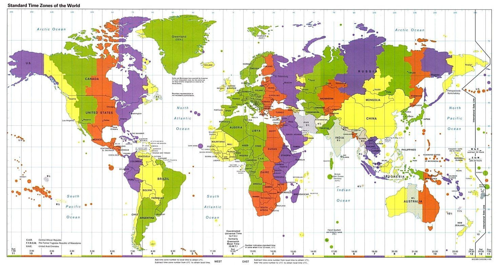
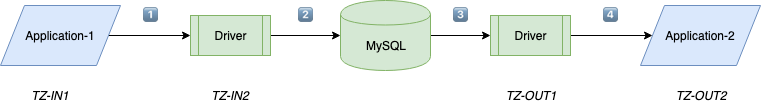

<!DOCTYPE HTML>
<html>
<head><meta name="generator" content="Hexo 3.9.0">
  <meta charset="utf-8">
  <meta http-equiv="X-UA-Compatible" content="IE=edge">
  <meta name="apple-mobile-web-app-capable" content="yes">
  <meta name="apple-mobile-web-app-status-bar-style" content="black">
  <meta name="google-site-verification" content>
  
  <title>MySQL Connect/J 8.0时区陷阱</title>
  <meta name="author" content="Emac">
   <meta name="description" content="最近公司正在升级Spring Boot版本（从1.5升级到2.1），其间踩到一个非常隐晦的MySQL时区陷阱，具体来说，就是数据库读出的历史数据的时间和实际时间差了14个小时，而新写入的数据又都正常。如果你之前也是使用默认的MySQL时区配置，那么大概率会碰到这个问题，深究其背后的原因又涉及到很多技">
  

  <meta property="og:title" content="MySQL Connect/J 8.0时区陷阱">
  <meta name="viewport" content="width=device-width, initial-scale=1, maximum-scale=1">
  <meta property="og:site_name" content="Emac">
 <meta property="og:image" content="undefined">
  
  <link href="/apple-touch-icon-precomposed.png" sizes="180x180" rel="apple-touch-icon-precomposed">
  <link rel="alternate" href="/atom.xml" title="Emac" type="application/atom+xml">
  <link rel="stylesheet" href="//cdn.bootcss.com/bootstrap/3.3.6/css/bootstrap.min.css">
  <link rel="stylesheet" href="//cdn.bootcss.com/font-awesome/4.5.0/css/font-awesome.min.css">
  <link rel="stylesheet" href="/css/m.min.css">
  <link rel="icon" type="image/x-icon" href="/favicon.ico">
</head>
</html>
<body>
  <div id='wx_pic' style='display:none;'></div>
  <div id="main">
    <div class="behind">
      <div class="back">
        <a href="/" class="black-color"><i class="fa fa-times" aria-hidden="true"></i></a>
      </div>
      <div class="description">
        &nbsp;拾贝
      </div>
    </div>
    <div class="container">
      

  <article class="standard post">
    <div class="title">
      
  
    <h1 class="page-title center">
        MySQL Connect/J 8.0时区陷阱
    </h1>
  


    </div>
    <div class="meta center">
      
<time datetime="2019-12-17T16:00:00.000Z">
  <i class="fa fa-calendar"></i>&nbsp;
  2019-12-18
</time>


    
    &nbsp;
    <i class="fa fa-tag"></i>&nbsp;
    <a href="/categories/devops/">devops</a>


    
    &nbsp;
    <i class="fa fa-tag"></i>&nbsp;
    <a href="/tags/原创/">原创</a>·<a href="/tags/Java/">Java</a>·<a href="/tags/MySQL/">MySQL</a>


    </div>
    <hr>
    <div class="picture-container">
      
    </div>
    <p></p>
<p>最近公司正在升级Spring Boot版本（从1.5升级到2.1），其间踩到一个非常隐晦的MySQL时区陷阱，具体来说，就是数据库读出的历史数据的时间和实际时间差了14个小时，而新写入的数据又都正常。如果你之前也是使用默认的MySQL时区配置，那么大概率会碰到这个问题，深究其背后的原因又涉及到很多技术细节，故整理出来分享给大家。</p>
<p>首先来看一下原因。升级到Boot 2.1之后，MySQL Connect/J版本也随之升级到8.0，会优先使用连接参数（<code>serverTimezone</code>）中指定的时区，如果没有指定，则再使用数据库配置的时区，参考下面的<a href="https://dev.mysql.com/doc/connector-j/8.0/en/connector-j-other-changes.html" target="_blank" rel="noopener">官宣</a>（对应的源代码是<code>com.mysql.cj.protocol.a.NativeProtocol#configureTimezone()</code>）。由于我们之前数据库连接参数没有指定时区，并且数据库配置的是默认的<code>CST</code>时区（美国中部时区，即-6:00），所以读取出来的时间出现偏差。</p>
<blockquote>
<p>Connector/J 8.0 always performs time offset adjustments on date-time values, and the adjustments require one of the following to be true:</p>
<ul>
<li>The MySQL server is configured with a canonical time zone that is recognizable by Java (for example, Europe/Paris, Etc/GMT-5, UTC, etc.)</li>
<li>The server’s time zone is overridden by setting the Connector/J connection property <code>serverTimezone</code> (for example, <code>serverTimezone=Europe/Paris</code>).</li>
</ul>
</blockquote>
<p>找到原因之后，解决办法就比较直白了，</p>
<p>方法一：数据库的连接参数添加<code>serverTimezone=Asia/Shanghai</code>或者<code>serverTimezone=GMT%2B8</code>。Boot 1.5下不需要添加此参数，但添加了也无妨。</p>
<p>方法二：修改MySQL数据库的time_zone配置，改为<code>+8:00</code>（默认是<code>SYSTEM</code>）。采用此方法，则不需要修改数据库连接参数。</p>
<p>方法二显然更优，一次修改，终生受益。但要注意，对于升级到Boot 2.1之后新生成的那批数据，如果包含时间类型的字段并且该字段值是应用指定的而不是数据库生成的（例如<code>DEFAULT CURRENT_TIMESTAMP</code>），那么需要手动修复（加上偏差的小时数）。</p>
<p>两个解决办法都很简单，有同学马上会问，为什么Boot 1.5下没有这个问题？为什么Boot 2.0下读取历史数据存在14个小时的偏差，而新生成的数据又是好的？要回答这两个问题，看官宣就不够了，需要读一下MySQL Connect/J的源代码。</p>
<p>谜题一，为什么Boot 1.5下没有这个问题？答案隐藏在<code>com.mysql.jdbc.ResultSetImpl</code>和<code>com.mysql.jdbc.ConnectionImpl</code>两个类的源代码中。</p>
<figure class="highlight java"><table><tr><td class="gutter"><pre><span class="line">1</span><br><span class="line">2</span><br><span class="line">3</span><br><span class="line">4</span><br><span class="line">5</span><br></pre></td><td class="code"><pre><span class="line"><span class="comment">// 源代码：com.mysql.jdbc.ResultSetImpl</span></span><br><span class="line"><span class="function"><span class="keyword">private</span> TimeZone <span class="title">getDefaultTimeZone</span><span class="params">()</span> </span>&#123;</span><br><span class="line">        <span class="comment">// useLegacyDatetimeCode默认为true，因此使用connection的默认时区</span></span><br><span class="line">        <span class="keyword">return</span> <span class="keyword">this</span>.useLegacyDatetimeCode ? <span class="keyword">this</span>.connection.getDefaultTimeZone() : <span class="keyword">this</span>.serverTimeZoneTz;</span><br><span class="line">    &#125;</span><br></pre></td></tr></table></figure>
<figure class="highlight java"><table><tr><td class="gutter"><pre><span class="line">1</span><br><span class="line">2</span><br><span class="line">3</span><br><span class="line">4</span><br><span class="line">5</span><br><span class="line">6</span><br></pre></td><td class="code"><pre><span class="line"><span class="comment">// 源代码：com.mysql.jdbc.ConnectionImpl</span></span><br><span class="line"><span class="function"><span class="keyword">public</span> <span class="title">ConnectionImpl</span><span class="params">(String hostToConnectTo, <span class="keyword">int</span> portToConnectTo, Properties info, String databaseToConnectTo, String url)</span> <span class="keyword">throws</span> SQLException </span>&#123;</span><br><span class="line">        <span class="comment">// connection的默认时区使用的是JVM的默认时区，一般为操作系统的时区</span></span><br><span class="line">        <span class="comment">// We store this per-connection, due to static synchronization issues in Java's built-in TimeZone class...</span></span><br><span class="line">        <span class="keyword">this</span>.defaultTimeZone = TimeUtil.getDefaultTimeZone(getCacheDefaultTimezone());</span><br><span class="line">&#125;</span><br></pre></td></tr></table></figure>
<p>Boot 1.5下，MySQL Connect/J默认使用操作系统的时区（Asia/Shanghai，即+8:00），而忽略连接参数或者数据库指定的时区，因此不管是读数据还是写数据都是使用统一的时区，因此不存在时间偏差。</p>
<p>谜题二，为什么Boot 2.0下读取历史数据存在14个小时的偏差，而新生成的数据又是好的？升级到Boot 2.0之后，MySQL Connect/J改为使用数据库配置的CST时区，而历史数据是在Boot 1.5下的Asia/Shanghai时区生成的，因此读出来存在14（-6:00和+8:00之间）个小时的偏差。对于新生成的数据，由于同处在CST时区下，因此没有偏差。</p>
<p>解完这两个谜题，你可能还有些疑惑。那么接下来，结合数据流转的顺序，我们再来分析一下数据流转过程中时区的变化。</p>
<p></p>
<p>设定Application-1为数据生产方，Application-2为数据消费方，TZ-IN1为Application-1所处的时区，TZ-IN2为Application-1写入数据库的时区，TZ-OUT1为Application-2读出数据库的时区，TZ-OUT2为Application-2所处的时区。如前所述，TZ-IN2和TZ-OUT1由连接参数或者数据库配置决定。</p>
<p>整个数据流转过程，会涉及3次显式的时区转换和1次隐式的时区转换。</p>
<ul>
<li>转换①（显式）：TZ-IN1转TZ-IN2，这个转换由MySQL Connect/J完成（参考<code>com.mysql.cj.ClientPreparedQueryBindings#setTimestamp()</code>，限于篇幅，此处不再展开分析）。</li>
<li>转换②（隐式）：TZ-IN2转无时区，MySQL内部存储时间类型的字段时或者忽略时区（DateTime类型）或者使用UTC（Timestamp类型），参考MySQL官宣的时间类型部分。</li>
<li>转换③（显式）：无时区转TZ-OUT1，将MySQL读出的无时区时间置为TZ-OUT1时区（参考<code>com.mysql.cj.result.SqlTimestampValueFactory#localCreateFromTimestamp()</code>）。</li>
<li>转换④（显式）：TZ-OUT1转TZ-OUT2，这个转换由Application-2负责，一般在DAO层完成。</li>
</ul>
<p>仔细分析这4次时区转换，其中①、②、③都是由MySQL完成，正确性不用怀疑，但由于TZ-IN2和TZ-OUT1都是由应用指定，如果两者值不相同，那么最后结果就会出现偏差（我们踩到的就是这个坑）。至于④，那么就得靠应用来保证正确性了，一般也不会出错。说句题外话，不管是时区转换，还是其他类型的数据转换（比如字符集转换），我们可以发现，正确转换的关键在于数据接收方必须使用和数据发送方相同的格式。这看上去像是一句废话，却是解决此类问题的底层心法。</p>
<p>至此，这个MySQL Connect/J 8.0的时区陷阱就算被填平了，希望你从中有所收获。</p>


  </article>
  </script>


    </div>
  </div>
  <footer class="page-footer"><div class="clearfix">
</div>
<div class="right-foot container">
    <div class="firstrow">
        <a href="#top" >
        <i class="fa fa-arrow-right"></i>
        </a>
        © emacoo.cn 2015-2024
    </div>
    <div class="secondrow">
        <a href="https://github.com/gaoryrt/hexo-theme-pln">
        
        </a>
    </div>
</div>
<div class="clearfix">
</div>
<script async src="//busuanzi.ibruce.info/busuanzi/2.3/busuanzi.pure.mini.js"></script>
<div class="busuanzi center">
    <span id="busuanzi_container_site_pv">本站总访问量<span id="busuanzi_value_site_pv"></span>次</span>
    <span id="busuanzi_container_site_uv">本站访客数<span id="busuanzi_value_site_uv"></span>人次</span>
    <span id="busuanzi_container_page_pv">
      本文总阅读量<span id="busuanzi_value_page_pv"></span>次
    </span>
</div>
</footer>
  <script src="//cdn.bootcss.com/jquery/2.2.1/jquery.min.js"></script>
<script src="/js/search.js"></script>
<script type="text/javascript">

// comments below to disable loading animation
function revealOnScroll() {
  var scrolled = $(window).scrollTop();
  $(".excerpt, .index-title, .index-meta, p").each(function() {
    var current = $(this),
      height = $(window).outerHeight(),
      offsetTop = current.offset().top;
    (scrolled + height + 50 > offsetTop) ? current.addClass("animation"):'';
  });
}
$(window).on("scroll", revealOnScroll);
$(document).ready(revealOnScroll)

// disqus scripts


// dropdown scripts
$(".dropdown").click(function(event) {
  var current = $(this);
  event.stopPropagation();
  $(current).children(".dropdown-content")[($(current).children(".dropdown-content").hasClass("open"))?'removeClass':'addClass']("open")
});
$(document).click(function(){
    $(".dropdown-content").removeClass("open");
})

// back to top scripts
$("a[href='#top']").click(function() {
  $("html, body").animate({ scrollTop: 0 }, 500);
  return false;
});


var path = "/search.xml";
searchFunc(path, 'local-search-input', 'local-search-result');

</script>

</body>
</html>
